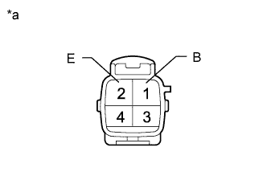

DTC C1752/52 Compressor Motor Malfunction |
| DTC Code | DTC Detection Condition | Trouble Area |
| C1752/52 | With the AIR SUS relay activated, a lock signal of the height control compressor motor is detected for 4 seconds or more. |
|
| 1.INSPECT SUSPENSION CONTROL RELAY (AIR SUS) |
Turn the engine switch off.
Remove the AIR SUS relay from the engine room relay block.
 |
Measure the resistance according to the value(s) in the table below.
| Tester Connection | Condition | Specified Condition |
| 3 - 5 | 12 V battery voltage is not applied to terminal 1 and 2 | 10 kΩ or higher |
| 12 V battery voltage is applied to terminal 1 and 2 | Below 1 Ω |
| *1 | AIR SUS Relay |
|
| ||||
| OK | |
| 2.CHECK TERMINAL VOLTAGE (POWER SUPPLY) |
Remove the AIR SUS relay from the engine room relay block.
Measure the voltage according to the value(s) in the table below.
| Tester Connection | Condition | Specified Condition |
| Engine room relay block AIR SUS relay terminal 5 - Body ground | Always | 11 to 14 V |
| *a | Component without AIR SUS Relay (Engine Room Relay Block) |
|
| ||||
| OK | |
| 3.CHECK HARNESS AND CONNECTOR (HEIGHT CONTROL COMPRESSOR - AIR SUS RELAY/SUSPENSION CONTROL ECU AND BODY GROUND) |
Disconnect the S10 height control compressor connector.
Remove the AIR SUS relay from the engine room relay block.
Disconnect the A11 suspension control ECU connector.
Measure the resistance according to the value(s) in the table below.
| Tester Connection | Condition | Specified Condition |
| S10-1 (B) - Engine room relay block AIR SUS relay terminal 3 | Always | Below 1 Ω |
| S10-1 (B) - Body ground | Always | 10 kΩ or higher |
| S10-2 (E) - Body ground | Always | Below 1 Ω |
| A11-19 (RM+) - S10-3 (RM+) | Always | Below 1 Ω |
| A11-19 (RM+) - Body ground | Always | 10 kΩ or higher |
| A11-17 (RM-) - S10-4 (RM-) | Always | Below 1 Ω |
| A11-17 (RM-) - Body ground | Always | 10 kΩ or higher |
|
| ||||
| OK | |
| 4.INSPECT HEIGHT CONTROL COMPRESSOR (COMPRESSOR MOTOR) |
|  |
Remove the height control compressor (Click here).
Apply 12 V battery voltage to the compressor motor and check the operation of the motor.
| Measurement Condition | Specified Condition |
| 12 V battery positive (+) voltage → Terminal 1 (B) 12 V battery negative (-) voltage → Terminal 2 (E) | Motor operates |
| *a | Component without harness connected (Height Control Compressor) |
|
| ||||
| OK | ||
| ||